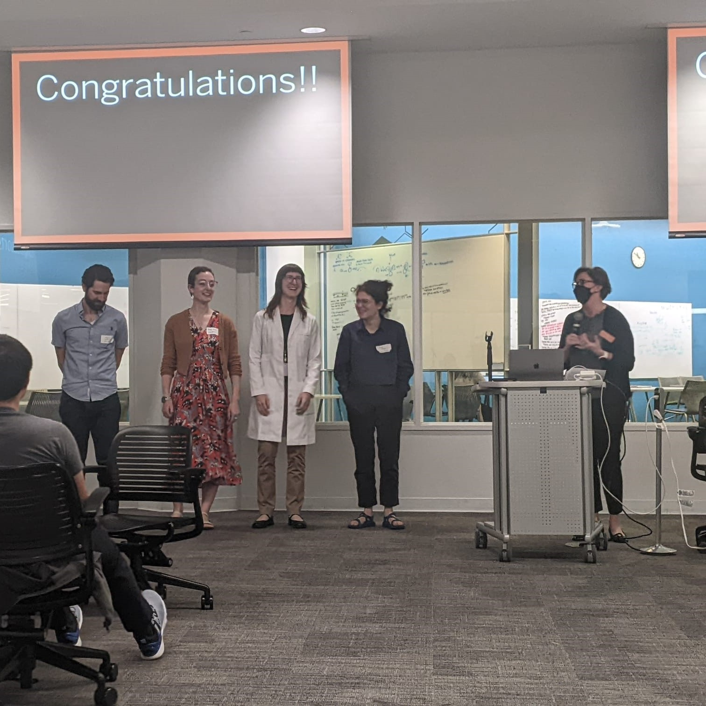
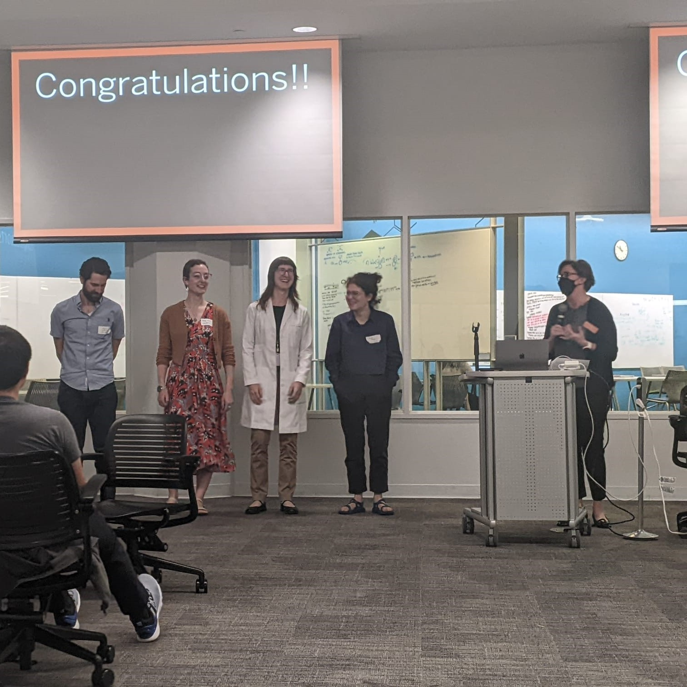

Instruction and Curriculum Design
My approach to instruction focuses on accessibility, linguistic diversity, and interactive learning.
I have instructed numerous sections of Introduction to the Study of Language , UT Austin's introductory course in linguistics. The course offers a crash-course in main areas of grammar as well as many applied disciplines. I have instructed this course entirely online, both with both synchronous and semi-asynchronous formats, and I have also instructed entirely in-person, and in-person with a hybrid option. My instructional strategy incorporates tools from the Universal Design for Learning framework to structure instructional experiences that are inclusive and accessible for all my students.
In addition, in Fall 2022 I instructed two sections of Fundamentals for TAs, which is a graduate-level course on pedagogy run by the UT Austin Center for Teaching and Learning (CTL). In this course, I trained Teaching Assistants who were in their first semester of teaching. This is an evidence-based course, with a 'just in time' curriculum that prepares instructors to workshop fundamentals of their courses as they progress. I met weekly with students and the team of instructors for the course, observed student discussion sections and provided feedback, and met with members of the Office of Undergraduate Studies to discuss strategies for improving the course.
 

Since I began instructing introductory linguistics in 2019, I have made numerous changes to the design of the course. In response to student performance in some challenging units, I adopted a novel structure which alternates weeks focusing on formal and applied linguistics. This structure creates a more cohesive 'story' for the course, and it places key formal concepts immediately before units which apply them, allowing students to more quickly see the practical applications of their knowledge. I have also developed numerous new assessments, using data drawn from my own research or from that of my colleagues. These assessments draw data from Indigenous languages of the Americas, thereby increasing the linguistic diversity to which students are exposed and giving them experience with real-world linguistic data.
I also restructured the grading and assessment schema for this course to rely on Standards Based Grading. Rather than relying on adding and subtracting points, I focus on assessment, feedback, and improvement, encouraging students to pursue learning and growth from a place of intrinsic, rather than extrinsic motivation. In addition to modifying the overall structure, I have implemented a non-traditional assessment, with great success. For one relatively major assignment, students are permitted to demonstrate their knowledge of the material in any format they desire. With this assignment, I focus on students' demonstration of knowledge, and I trust my students to choose the format that best utilizes their strengths. In 2023, I was selected via competition to present in the Graduate Teaching Showcase hosted by the UT Austin Center for Teaching and Learning, where I presented on my experience in designing this assessment.
I have made my new course materials available for use by future instructors of the course, and I have observed other instructors in our deparment making use of them to enrich their own teaching. As of 2022, this course carries a Global Cultures Flag, indicating that at least 30% of the course grade focuses on a cultural group outside the United States. I contributed my course materials as support for the Departmental application to the University for this course to be granted this flag; my curriculum focuses on Indigenous American Languages. In 2023, I was awarded the first ever Linguistics department award for excellence in graduate student teaching in recognition of my work in this course.